Chapter 3: Endpoint & Device Security¶
An 'endpoint' is any device people actually use: laptops, desktops, phones, tablets and servers. Because attackers usually break in through one of these devices, protecting them is one of the most important jobs in security. This group covers the tools that stop malware, keep devices updated and configured, control what can run, manage devices remotely, protect servers and virtual desktops, and record what happens so problems can be spotted and fixed fast.
3.1 Endpoint Detection & Response / XDR¶
Endpoint Detection and Response (EDR) software watches everything happening on a computer, such as programs starting, files changing and network connections, and raises an alarm when behaviour looks like an attack. It also lets security staff respond remotely, for example by cutting an infected laptop off the network. XDR (Extended Detection and Response) goes further by joining signals from computers, email, cloud accounts and the network into one picture.
Think of it like…
Classic antivirus is a bouncer checking IDs at the door; EDR is a security team with CCTV in every room that notices when a 'guest' starts picking locks and can lock that room instantly.
Real-world example
At Northfield Logistics, an accountant opens a fake invoice that quietly launches PowerShell and tries to dump stored passwords. The company's EDR spots this unusual chain of events within seconds and automatically isolates the laptop from the network. The security analyst sees a timeline showing exactly which file started it, removes the malware remotely, and blocks the same file on all 2,000 other devices. The attacker never reaches the payroll servers.
How it works¶
- A small software 'sensor' is installed on every laptop, desktop and server.
- The sensor records activity (processes, files, logins, network connections) and sends it to a central console, usually in the cloud.
- Detection rules, behaviour analysis and machine learning flag suspicious patterns such as ransomware-like file encryption.
- Analysts or automated playbooks respond: isolate the device, kill the process, delete the file, or roll back changes.
- XDR adds email, identity, cloud and network data so one attack can be followed across all systems.
Who uses it
Security operations centre (SOC) analysts, IT security teams and managed security providers in almost every mid-size and large organisation.
Key takeaway
An EDR is only as good as the people or service watching its alerts, so pair it with a 24/7 team or a managed detection and response (MDR) service.
Going deeper
- Sensors collect process starts with full command lines, parent-child chains, file writes, registry changes, network connections and logons; on Windows they use kernel callbacks, ETW and file-system minifilter drivers.
- XDR correlates endpoint data with email, identity, cloud and network telemetry. 'Native' XDR relies on one vendor's stack; 'open' XDR ingests third-party tools through connectors.
- Standard response actions include network isolation (keeping only the console connection), killing processes, quarantining files, collecting a forensic package, remote shell scripts and fleet-wide hash blocking.
- MITRE ATT&CK Evaluations and labs such as AV-Comparatives and SE Labs measure detection visibility and protection; results show capability, not how well a product fits your team.
- The July 2024 CrowdStrike content-update failure crashed about 8.5 million Windows machines, prompting staged content rollouts and Microsoft's push to run security tools outside the kernel.
- Key SOC measures are mean time to detect (MTTD), mean time to respond (MTTR) and sensor coverage, because every device without a healthy sensor is a blind spot.
Common mistakes & misconceptions
- Leaving EDR in detect-only mode for months; once tuned, enable prevention and automatic isolation or alerts arrive after the damage.
- Assuming full coverage while Linux servers, contractor laptops and new cloud VMs lack sensors; reconcile EDR inventory against asset lists every month.
- Adding broad folder exclusions for performance gives attackers a safe hiding place; keep exclusions narrow, documented and regularly reviewed.
- Leaving tamper protection off lets intruders uninstall or blind the agent; enable it and alert whenever a sensor goes silent.
Popular tools & products¶
| Name | What it does | Example |
|---|---|---|
| CrowdStrike Falcon Insight XDR CrowdStrike · Cloud service |
Lightweight cloud-managed sensor known for strong threat detection, threat hunting and its optional Falcon Complete managed service. | A bank uses Falcon to spot and stop credential-theft attempts on traders' workstations, with CrowdStrike's managed team responding overnight. |
| Microsoft Defender for Endpoint Microsoft · Cloud service |
EDR built into Windows and available for macOS, Linux, iOS and Android; part of the Microsoft Defender XDR suite. | A university with Microsoft 365 E5 licences turns it on for 15,000 devices and investigates alerts alongside email and identity signals. |
| SentinelOne Singularity SentinelOne · Cloud service |
AI-driven endpoint protection and EDR that can automatically stop attacks and roll Windows files back after ransomware. | A manufacturer hit by ransomware on one PC uses the one-click rollback to restore encrypted files in minutes. |
| Cortex XDR Palo Alto Networks · Cloud service |
Combines endpoint, network and cloud data to detect attacks and stitch related alerts into one incident. | A retailer already using Palo Alto firewalls links firewall logs with endpoint data to trace a breach from laptop to server. |
| Sophos Intercept X (with XDR) Sophos · Commercial |
Endpoint protection with strong anti-ransomware and exploit prevention, plus optional XDR and a managed detection service. | A 200-person law firm uses Intercept X with Sophos MDR so experts watch its devices around the clock. |
| TrendAI Vision One TrendAI (Trend Micro) · Cloud service |
XDR platform (formerly Trend Vision One) joining endpoint, email, server and cloud protection with risk scoring; Trend Micro's business arm became TrendAI in 2026. | A hospital group correlates a phishing email with the laptop that clicked it and the server it later touched. |
| Symantec CBX / Carbon Black Cloud Broadcom · Cloud service |
Broadcom's 2026 XDR platform combining Symantec prevention with Carbon Black's detailed EDR recording; Carbon Black Cloud is still sold separately. | An incident responder replays the full process tree on a compromised server to see every command the attacker ran. |
| Trellix Endpoint Security (ENS & HX) Trellix · Commercial |
Enterprise antimalware (ENS) and EDR (HX) descended from McAfee Enterprise and FireEye technology. | A government agency uses Trellix HX to sweep thousands of hosts for indicators from a new threat report. |
| Cybereason XDR LevelBlue (Cybereason) · Commercial |
EDR/XDR that groups related suspicious events into a single 'MalOp' story; Cybereason became part of LevelBlue in 2025. | An analyst sees one MalOp linking a phishing attachment, a backdoor and lateral movement instead of fifty separate alerts. |
| Elastic Defend Elastic · Freemium |
Elastic's endpoint protection and EDR integration, installed through Elastic Agent, with malware, ransomware and memory-threat prevention; a free basic tier exists. | A start-up's Elastic Defend blocks ransomware on a build server and sends the full process tree to Kibana for the on-call engineer to review. |
| Bitdefender GravityZone Bitdefender · Commercial |
Business endpoint security with antimalware, EDR/XDR and risk analytics, popular with small businesses and service providers. | An IT service provider manages protection for 40 small clients from one GravityZone console. |
| ESET PROTECT (with ESET Inspect) ESET · Commercial |
Business endpoint protection with EDR/XDR added through ESET Inspect, known for low system impact, with an optional MDR service. | A European engineering firm uses ESET Inspect to find which PCs ran a suspicious script first spotted on one laptop. |
| Cisco Secure Endpoint Cisco · Cloud service |
Endpoint protection and EDR (formerly AMP for Endpoints) backed by Cisco Talos threat intelligence. | A school district retroactively flags a file that was later found malicious and sees every PC that ran it. |
| Huntress Managed EDR Huntress · Commercial |
EDR for small businesses and IT providers bundled with a 24/7 human-led SOC that investigates threats and writes plain-English remediation steps. | A dental practice's IT provider gets a clear 'here's what to do' report when Huntress catches a hidden remote-access tool. |
| Fortinet FortiEDR Fortinet · Commercial |
EDR that blocks malicious actions in real time, such as outbound connections or file encryption, and integrates with FortiGate firewalls and FortiSIEM. | A retailer's FortiEDR stops ransomware mid-encryption on a store server and the FortiGate quarantines the device automatically. |
3.2 Antivirus & Endpoint Protection¶
Antivirus software scans files, downloads and running programs to find and block malicious software (malware) such as viruses, ransomware and spyware. Modern products do more than match known 'fingerprints': they also watch behaviour, check web links and use cloud lookups to catch brand-new threats. Endpoint Protection Platforms (EPP) are the business versions, managed centrally for many devices.
Think of it like…
It is like a flu vaccine plus a thermometer: it recognises known illnesses immediately and also notices when you start running a fever from something new.
Real-world example
Priya, a freelance designer, downloads a 'free font pack' that actually contains a password-stealing program. Microsoft Defender Antivirus on her laptop recognises the file's behaviour from cloud data, quarantines it before it runs, and shows a notification. She deletes the download and changes nothing else, because nothing was stolen.
How it works¶
- The product installs on the device and keeps a constantly updated list of threat signatures and behaviour rules.
- Real-time protection scans files as they are downloaded, opened or run.
- Suspicious files are checked against cloud reputation services and behaviour monitoring.
- Threats are blocked, quarantined (locked away) or removed, and the user or admin is alerted.
- Scheduled scans sweep the whole device for anything that slipped through.
Who uses it
Everyone: home users, small businesses and large organisations, usually as the baseline layer under EDR.
Key takeaway
Run exactly one real-time antivirus at a time, keep it updated automatically, and never switch it off to make something 'work'.
Going deeper
- Detection combines signatures for known files, heuristics and machine-learning models for unknown files, cloud reputation lookups, and behaviour monitoring of what a program actually does after starting.
- Windows' Antimalware Scan Interface (AMSI) lets antivirus inspect PowerShell, VBScript, JavaScript and Office macros after de-obfuscation, catching fileless script attacks that never touch disk as normal files.
- AV-TEST, AV-Comparatives and SE Labs test protection, false positives and performance several times a year; prefer products that score consistently across many rounds rather than one headline result.
- Microsoft Defender Antivirus switches to passive mode when another antivirus is registered, and 'EDR in block mode' lets Defender for Endpoint remediate threats the third-party product misses.
- The EICAR test file is a harmless, industry-standard text string every antivirus detects, used to confirm real-time protection and alerting work without handling real malware.
Common mistakes & misconceptions
- Running two real-time antivirus engines together causes slowdowns and conflicts; use one, plus an on-demand second-opinion scanner if needed.
- Believing antivirus alone stops modern attacks; intruders use legitimate tools such as PowerShell, so pair it with EDR, patching and MFA.
- Excluding whole folders to fix a slow application; exclude specific files or processes only after testing, and review exclusions regularly.
Try it: Check Microsoft Defender status and run a quick scan (Windows PowerShell)¶
Get-MpComputerStatus | Select-Object AntivirusEnabled, RealTimeProtectionEnabled, AntivirusSignatureLastUpdated
Start-MpScan -ScanType QuickScan
Popular tools & products¶
| Name | What it does | Example |
|---|---|---|
| Microsoft Defender Antivirus Microsoft · Free |
Antivirus built into Windows 10 and 11, turned on by default and updated through Windows Update. | A family PC is protected out of the box without buying anything, with cloud protection catching new threats. |
| Apple XProtect Apple · Free |
Antimalware built into macOS that silently checks apps against known malware and removes threats, updated automatically by Apple. | A Mac user downloads a fake video player; macOS blocks it and moves it to the bin. |
| Bitdefender Total Security Bitdefender · Commercial |
Consumer security suite with consistently top test scores, plus anti-ransomware, web protection and a VPN. | A household protects three Windows laptops, a Mac and two Android phones with one subscription. |
| Kaspersky Premium Kaspersky · Commercial |
Well-tested antivirus suite; US sales were banned from July 2024 and updates from September 2024, so check local rules. | A home user outside the US uses Kaspersky's safe-money feature to open banking sites in a protected browser. |
| ESET Home Security / NOD32 ESET · Commercial |
Light, fast antivirus known for low system impact; business versions are managed through ESET PROTECT. | A small accounting office runs ESET on older PCs because it barely slows them down. |
| Norton 360 Gen Digital · Commercial |
Popular consumer suite combining antivirus, password manager, cloud backup, VPN and identity monitoring. | A retiree gets alerts if their email address appears in a data breach and backs up photos to Norton's cloud. |
| Avast One / Avast Free Antivirus Gen Digital · Freemium |
Widely used free antivirus with paid upgrades for extra privacy and performance features. | A student installs the free version on a personal laptop for real-time scanning and web shield protection. |
| AVG AntiVirus Free Gen Digital · Freemium |
Free antivirus sharing Avast's detection engine, with a paid Internet Security upgrade. | A home user scans a USB stick from a print shop before opening any files on it. |
| McAfee+ McAfee · Commercial |
Consumer security subscription with antivirus, web protection, VPN and identity monitoring, often preinstalled on new PCs. | A new laptop owner activates the bundled McAfee trial and keeps it for scam-site blocking. |
| Avira Free Security Gen Digital · Freemium |
Popular free antivirus from Germany with web protection and a basic VPN; the paid Prime plan adds more features and devices. | A student protects an older Windows laptop for free and uses its browser extension to block scam shopping sites. |
| Malwarebytes Malwarebytes · Freemium |
Anti-malware famous as a 'second opinion' cleaner; the free scanner removes infections, Premium adds real-time protection. | A technician runs Malwarebytes to remove adware that keeps hijacking a customer's browser homepage. |
| Trend Micro Maximum Security Trend Micro · Commercial |
Consumer suite with antivirus, ransomware folder protection, scam-site blocking and parental controls. | Parents use it to protect children's laptops and filter unsuitable websites. |
| Sophos Home Sophos · Freemium |
Home version of Sophos business protection, managed from a web dashboard: three devices free, up to ten with Premium. | A tech-savvy son manages antivirus on his parents' computers remotely from the Sophos Home dashboard. |
| ClamAV Cisco Talos · Open source |
Free open-source antivirus engine, mainly used on Linux mail and file servers to scan attachments and uploads. | A web hosting company scans every customer file upload and incoming email attachment with ClamAV. |
| Webroot / OpenText Core Endpoint Protection OpenText · Commercial |
Very lightweight, cloud-based antivirus; the home product is still Webroot, the business edition is now OpenText Core Endpoint Protection. | An IT provider protects hundreds of small-office PCs with Webroot's tiny agent and central console. |
3.3 Mobile Device & Unified Endpoint Management¶
Mobile Device Management (MDM) lets an organisation set up, secure and control phones, tablets and laptops from one central place. Unified Endpoint Management (UEM) is the same idea covering every kind of device: Windows, Mac, iPhone, Android and more. Admins can push apps and settings, require passcodes and encryption, and wipe a lost device remotely.

Think of it like…
It is like a school handing out lockers with a master key: every locker follows the same rules, and the office can open or clear any locker if needed.
Real-world example
Coastline Health gives 800 nurses iPads. Using Microsoft Intune, IT ships the boxes straight to the wards; when a nurse signs in, the iPad automatically installs the patient-records app, enforces a six-digit passcode and turns on encryption. When one iPad is left on a bus, IT wipes the work data remotely within minutes, and the hospital avoids a data breach report.
How it works¶
- Devices are enrolled, ideally automatically through Apple Business Manager, Android Zero-Touch or Windows Autopilot.
- Admins define policies: passcode rules, encryption, Wi-Fi, VPN, allowed apps and update schedules.
- The MDM pushes settings and apps to devices over the internet.
- Compliance checks report devices that are out of date or rule-breaking, and access to email or apps can be blocked until fixed.
- Lost, stolen or departing-employee devices can be locked, located or wiped remotely.
Who uses it
IT administrators in companies, schools, hospitals and governments that hand out or allow work devices, including personal phones (BYOD).
Key takeaway
Enrol devices automatically from the start, and for personal phones manage only the work apps and data so employees' privacy is respected.
Going deeper
- Apple MDM wakes devices through the Apple Push Notification service (APNs); the device then checks in with the MDM server, so the push certificate must be renewed every year with the same Apple ID.
- Supervised iPhones and iPads, enrolled through Automated Device Enrollment, allow stronger controls such as non-removable management profiles, app restrictions and single-app kiosk mode.
- Android Enterprise offers fully managed mode for company phones and a work profile for personal phones, keeping work apps and data in a separate container IT can wipe.
- Compliance policies covering OS version, encryption, passcode, jailbreak or root, and threat risk feed identity providers such as Entra ID Conditional Access, so non-compliant devices lose access automatically.
- Apple's Declarative Device Management, introduced in 2022, lets devices apply and report settings autonomously, and Apple is moving software-update enforcement from older MDM commands to it.
- For BYOD, Intune app protection policies (MAM) can encrypt and restrict corporate data inside Outlook or Teams without enrolling the personal phone at all.
Common mistakes & misconceptions
- Managing personal phones as fully managed devices invades privacy and drives refusals; use work profiles or app protection policies for BYOD.
- Letting the yearly Apple push certificate expire, or renewing it with a different Apple ID, breaks management of every Apple device.
- Sending a full wipe when a selective wipe of work data was intended; document and test which wipe type each scenario uses.
Try it: See whether a Windows PC is joined to Entra ID and enrolled in MDM¶
dsregcmd /status
Popular tools & products¶
| Name | What it does | Example |
|---|---|---|
| Microsoft Intune Microsoft · Cloud service |
Cloud UEM for Windows, macOS, iOS, Android and Linux, tightly linked to Microsoft Entra ID and Conditional Access. | A company only lets staff open Outlook on phones that Intune reports as encrypted and up to date. |
| Jamf Pro Jamf · Commercial |
The leading management platform for Apple devices: Macs, iPhones, iPads and Apple TVs. | A design agency sets up 300 new MacBooks automatically, with fonts, apps and FileVault encryption ready on first login. |
| Omnissa Workspace ONE UEM Omnissa (formerly VMware) · Commercial |
Enterprise UEM for all major platforms, including rugged Android devices, with a single app catalogue for users. | A delivery firm manages thousands of handheld scanners and drivers' phones from one console. |
| Google Endpoint Management Google · Cloud service |
Device management built into Google Workspace for Android, iOS, ChromeOS, Windows and Mac. | A school using Google Workspace requires screen locks on staff phones before they can sync Gmail. |
| Iru (formerly Kandji) Iru · Commercial |
Apple-focused device management and security platform with ready-made security baselines and heavy automation; renamed from Kandji in 2025. | A fintech start-up applies a CIS-style security baseline to every Mac with a few clicks. |
| IBM MaaS360 IBM · Cloud service |
Cloud UEM with AI-assisted insights, covering phones, tablets and laptops. | An insurance company uses MaaS360 to separate work email from personal apps on agents' own phones. |
| ManageEngine Endpoint Central ManageEngine (Zoho) · Commercial |
UEM and desktop management (formerly Desktop Central) with patching, software deployment and remote control. | A mid-size council manages 3,000 PCs and phones, pushing software and fixing users' issues remotely. |
| Ivanti Neurons for MDM Ivanti · Cloud service |
Mobile and endpoint management built on the former MobileIron platform. | A government department manages secure email on staff iPhones with strict data-sharing controls. |
| Hexnode UEM Hexnode · Commercial |
UEM popular for kiosk mode, locking tablets to a single app for shops, restaurants and check-in desks. | A restaurant chain locks its ordering tablets so they can only run the menu app. |
| Mosyle Mosyle · Commercial |
Apple device management widely used by schools and businesses, with built-in security features. | A school district manages 20,000 student iPads and restricts apps during exams. |
| SOTI MobiControl SOTI · Commercial |
Device management widely used for rugged handhelds, scanners and kiosks in warehouses, retail and transport. | A parcel company locks 12,000 drivers' handheld scanners to its delivery app and updates them overnight. |
| Apple Business Manager Apple · Free |
Free Apple portal that links purchased devices to your organisation so they auto-enrol in your chosen MDM. | New iPhones bought from a reseller enrol into Jamf the moment employees switch them on. |
| Android Enterprise Google · Platform |
Android's built-in framework for separating work and personal data and supporting zero-touch enrolment. | Staff get a separate 'Work' profile on their own Android phones that IT can wipe without touching personal photos. |
| Windows Autopilot Microsoft · Cloud service |
Zero-touch provisioning for Windows: new PCs register to the organisation, then join Entra ID and enrol in Intune on first sign-in. | A consultancy ships laptops from the reseller straight to new hires, who sign in and receive apps, BitLocker and policies within an hour. |
3.4 Mobile Threat Defense & App Vetting¶
Mobile Threat Defense (MTD) apps protect phones and tablets from risky apps, phishing links, dangerous Wi-Fi networks and outdated or tampered operating systems. App vetting means checking an app for malware, privacy leaks or weak security before people install it, either by app store reviewers or by security testing tools. Together they help keep the small computer in everyone's pocket safe.
Think of it like…
MTD is like a smoke detector for your phone, while app vetting is the food inspector who checks a restaurant before it is allowed to open.
Real-world example
A sales rep at Brightwave Media gets a text claiming a parcel is waiting, with a link to a fake delivery site. Lookout on her company phone blocks the page as phishing before she can enter anything. Meanwhile, the company's developers scan their own new app with MobSF before release and discover that it stored login tokens in plain text, which they fix before launch.
How it works¶
- An MTD app is installed on the phone, often pushed automatically by the MDM.
- It checks installed apps, the OS version, device settings and network connections for risks.
- It blocks phishing links in texts, emails and messaging apps.
- Risk scores are shared with the MDM so a risky phone can lose access to company data until fixed.
- App vetting tools analyse app files (APK/IPA) for malware, insecure storage, hidden trackers and weak encryption.
Who uses it
Mobile security teams, MDM administrators, app developers and penetration testers, especially in finance, healthcare and government.
Key takeaway
Most phone attacks start with a link, so pair MTD phishing protection with keeping the phone's OS updated.
Going deeper
- MTD watches four risk areas: the device (OS version, jailbreak or root), apps (malicious or leaky), networks (rogue Wi-Fi, TLS interception) and content (phishing links in SMS, email and chat).
- On iOS, apps cannot inspect other apps, so MTD phishing protection usually works through a local VPN or DNS filter; Android allows deeper scanning of installed apps.
- Mercenary spyware such as NSO Group's Pegasus has used zero-click exploits; Apple sends threat notifications to targeted users, and Lockdown Mode shrinks the attack surface for high-risk people.
- App vetting combines static analysis (decompiling APK or IPA files for hard-coded secrets, permissions and insecure storage) with dynamic analysis of live traffic, guided by OWASP MASVS and MASTG.
- SMS phishing ('smishing') and QR-code phishing ('quishing') bypass email gateways entirely, which is why link protection on the phone itself matters.
Common mistakes & misconceptions
- Assuming iPhones need no protection; phishing, malicious configuration profiles and outdated iOS versions are real risks without traditional malware.
- Blocking every medium-risk device on day one floods the help desk; start in report mode, then enforce high-risk blocking.
- Treating app-store review as a guarantee; risky and data-hungry apps still slip through, so vet business-critical apps yourself.
Try it: Run the MobSF app scanner locally with Docker, then open http://localhost:8000¶
docker run -it --rm -p 8000:8000 opensecurity/mobile-security-framework-mobsf:latest
Popular tools & products¶
| Name | What it does | Example |
|---|---|---|
| Lookout Mobile Endpoint Security Lookout · Cloud service |
Mobile threat defense focused on phishing protection, risky apps and device vulnerabilities for iOS and Android. | A bank blocks staff phones with a malicious sideloaded app from accessing internal email. |
| Zimperium Mobile Threat Defense Zimperium · Commercial |
Detects malware, phishing and network attacks using machine learning on the device itself, so protection keeps working offline. | Field engineers' tablets warn them when they connect to a rogue Wi-Fi hotspot at an airport. |
| Microsoft Defender for Endpoint on iOS/Android Microsoft · Cloud service |
Mobile version of Defender that blocks phishing sites, scans Android apps and reports risk to Intune. | Intune automatically blocks Teams on a phone that Defender marks as high risk. |
| Check Point Harmony Mobile Check Point · Commercial |
Mobile threat defense protecting against malicious apps, network attacks and phishing. | A logistics firm uses it to flag drivers' phones that are rooted or jailbroken. |
| Google Play Protect Google · Free |
Built-in Android protection that scans apps from Play and other sources and can disable harmful ones. | Play Protect warns a user that a sideloaded 'free game' is spyware and switches it off. |
| Apple App Store Review Apple · Free |
Apple's mix of automated and human checks that every iPhone and iPad app must pass before publication. | An app that secretly collects contacts without permission is rejected before it reaches users. |
| Samsung Knox Samsung · Platform |
Hardware-backed security platform in Samsung devices, providing secure work containers and tamper detection. | A police force uses Knox-protected Galaxy phones with locked-down work profiles for case data. |
| MobSF (Mobile Security Framework) MobSF community · Open source |
Free tool that automatically analyses Android and iOS app files, used here to vet third-party or in-house apps before company devices may install them. | A bank's mobile team scans a supplier's APK in MobSF and refuses approval because it sends staff data over unencrypted HTTP. |
| NowSecure NowSecure · Commercial |
Mobile app security testing and app-vetting service that rates third-party and in-house apps for security and privacy risks before enterprise approval. | A hospital checks NowSecure's risk report on a popular messaging app before allowing it on clinicians' managed phones. |
| Jamf Protect / Jamf Executive Threat Protection Jamf · Commercial |
Threat detection for Apple devices, including tools that look for signs of advanced spyware on iPhones. | A journalist's organisation checks staff iPhones for traces of mercenary spyware. |
| iVerify iVerify · Freemium |
Mobile security app and enterprise service that checks iPhones and Android phones for signs of spyware and risky settings. | A charity's staff run an iVerify check before travelling, and one flagged phone is sent for a forensic review. |
| Apple Lockdown Mode Apple · Free |
Optional extreme-protection setting on Apple devices that switches off risky features targeted by spyware. | A human-rights lawyer enables Lockdown Mode to reduce the chance of targeted phone hacking. |
3.5 Patch & Software Update Management¶
A 'patch' is an update that fixes a bug or security hole in software. Patch management tools find which devices are missing updates and install them on a schedule, so known weaknesses are closed before attackers use them. Many major breaches came from flaws that already had a fix available but were never installed.
Think of it like…
It is like a car recall service that tracks every car in a fleet and books each one in for the free repair before the faulty part fails.
Real-world example
Maple Street Credit Union's IT team of three looks after 450 Windows PCs and 30 servers. Using Windows Autopatch for PCs and an Automox policy for servers and third-party apps such as Chrome and Zoom, updates roll out first to a small test group, then to everyone a few days later. When an emergency browser fix is released, they push it to all devices within 24 hours and confirm 98% compliance on the dashboard.
How it works¶
- Scan all devices to build an inventory of operating systems, apps and missing updates.
- Rank missing patches by risk, putting actively exploited flaws first.
- Test updates on a small pilot group of devices.
- Roll out in waves on a schedule, with restarts planned outside working hours.
- Report compliance and chase devices that failed or were offline.
Who uses it
IT operations and desktop support teams, server administrators and managed service providers in every sector.
Key takeaway
Patch internet-facing systems and actively exploited vulnerabilities (such as those on CISA's KEV list) first, within days rather than weeks.
Going deeper
- Microsoft releases security updates on Patch Tuesday, the second Tuesday of each month, and ships out-of-band fixes when a flaw is already being exploited.
- Under CISA Binding Operational Directive 22-01, US federal agencies must fix KEV-listed vulnerabilities by set due dates, typically two weeks for newly added recent CVEs.
- The Australian Essential Eight expects patches for internet-facing services within 48 hours when a working exploit exists, and within two weeks otherwise.
- Third-party apps such as browsers, PDF readers, Java and meeting clients are often more exposed than the OS; catalogues like Patch My PC or ManageEngine package them automatically.
- Linux distributions publish advisories (Ubuntu USN, Red Hat RHSA, Debian DSA); live patching fixes the running kernel, but updated user-space services still need restarting.
Common mistakes & misconceptions
- Reporting 'patches deployed' instead of 'devices updated and rebooted'; measure installed state, including laptops that were offline.
- Forgetting firmware, VPN gateways and network appliances; many mass-exploited flaws sit in edge devices outside the normal patch tool.
- Testing forever or not at all; a pilot ring of a few days catches most bad monthly updates.
Try it: Update all installed apps on Windows (winget) or Ubuntu/Debian (apt)¶
winget upgrade --all
# Ubuntu / Debian
sudo apt update && sudo apt upgrade
Popular tools & products¶
| Name | What it does | Example |
|---|---|---|
| Windows Autopatch Microsoft · Cloud service |
Cloud service that automatically manages Windows, Microsoft 365 Apps, Edge and Teams updates in staged rings. | A company lets Autopatch release updates to 5% of PCs first, then everyone after no problems appear. |
| Windows Update client policies (formerly Windows Update for Business) Microsoft · Cloud service |
Free Windows policies, set via Intune or Group Policy, that control when devices get updates, with deadlines and deferrals. | IT sets a seven-day deadline after which laptops must restart to install security updates. |
| WSUS (Windows Server Update Services) Microsoft · Free |
Long-standing on-premises Windows update server; deprecated by Microsoft, still supported but receiving no new features. | A factory with no direct internet on its PCs approves updates centrally through WSUS. |
| Microsoft Configuration Manager (MECM/SCCM) Microsoft · Commercial |
On-premises system for deploying software, operating systems and updates to large Windows estates. | A bank deploys monthly patches to 40,000 PCs through MECM with tight change control. |
| Ivanti Neurons for Patch Management Ivanti · Commercial |
Patching for Windows, macOS, Linux and hundreds of third-party apps, prioritised by real-world exploit risk. | A hospital patches Adobe Reader and Java across all wards based on which flaws are actively exploited. |
| ManageEngine Patch Manager Plus ManageEngine (Zoho) · Commercial |
Automated patching for Windows, Mac, Linux and hundreds of third-party applications. | A school automatically updates Zoom, Chrome and Firefox on all classroom PCs every week. |
| Automox Automox · Cloud service |
Cloud-native patching and scripting for Windows, macOS and Linux devices anywhere on the internet. | A remote-first company patches laptops in 20 countries without any VPN. |
| Tanium Patch Tanium · Commercial |
Real-time visibility and patching at very large scale, as part of the Tanium endpoint platform. | A global retailer checks in seconds which of 200,000 devices are missing an emergency fix. |
| Action1 Action1 · Freemium |
Cloud patch management for Windows, macOS and third-party apps, free for up to 200 devices. | A small charity patches all 80 of its laptops and desktops for free, including Zoom and Adobe Reader. |
| PDQ Deploy & Inventory PDQ · Commercial |
Simple tools for Windows admins to deploy software and patches and track what is installed. | A sysadmin pushes the latest Chrome update to every office PC in a few clicks. |
| unattended-upgrades Debian / Ubuntu · Open source |
Linux package that automatically installs security updates on Debian and Ubuntu systems. | A developer's cloud server installs security fixes overnight without anyone logging in. |
| Red Hat Satellite Red Hat · Commercial |
Manages content, patching and configuration for fleets of Red Hat Enterprise Linux servers. | A telecom company patches 3,000 RHEL servers in planned maintenance windows. |
| Patch My PC Patch My PC · Commercial |
Ready-made catalogue that packages and publishes updates for hundreds of third-party apps into Intune and Configuration Manager. | An IT team stops hand-packaging Chrome, Zoom and 7-Zip updates and lets Patch My PC publish them to Intune automatically. |
| Canonical Landscape Canonical · Commercial |
Management tool for Ubuntu fleets, part of Ubuntu Pro, that reports and applies security updates across many servers and desktops. | A university schedules security updates for 600 Ubuntu lab machines and servers from one Landscape dashboard. |
3.6 Remote Monitoring & Management (RMM) & Remote Support¶
Remote monitoring and management (RMM) tools let IT teams and IT service providers look after many computers from one web console: checking health, installing updates, running scripts and taking over the screen to help a user. Because one RMM login can reach every device, these tools are powerful for defenders and a prize for attackers, who also trick people into installing remote-support apps. Securing RMM means locking down who can use it and blocking any remote tool you did not approve.
Think of it like…
An RMM is like a master key ring for every office in a building: hugely convenient for the caretaker, but if it is copied or stolen every door opens, so it needs a strong safe and a sign-out log.
Real-world example
Bluewater IT Services looks after 45 small businesses using NinjaOne. After reading about criminals abusing remote-access tools, it requires phishing-resistant MFA for every technician, limits who can run scripts on all clients at once, and records every remote session. It also uses application control to block remote apps it does not use. When a scammer phones a client's receptionist pretending to be IT support and asks her to install AnyDesk, the app refuses to run and Bluewater gets an alert.
How it works¶
- Choose one approved RMM and remote-support tool and install its agent on every managed device.
- Protect the console with phishing-resistant MFA, role-based permissions and alerts for unusual logins.
- Use it to monitor device health, push patches and scripts, and give remote help with the user's consent and a session log.
- Patch the RMM product itself quickly, especially self-hosted servers, because attackers target known flaws in these tools.
- Block or alert on any unapproved remote-access software using application control and EDR.
Who uses it
Internal IT and help desks, managed service providers (MSPs) who run IT for small businesses, and security teams who audit remote access.
Key takeaway
Treat your RMM console like a top-level administrator account: phishing-resistant MFA, least privilege, audit logs, and an alert whenever an unknown remote-access tool appears.
Going deeper
- RMM agents run as SYSTEM or root on every managed machine, so the console is effectively administrator access to all customers; protect it like a privileged access management tool.
- The 2021 Kaseya VSA attack reached about 60 managed service providers and up to 1,500 downstream businesses; CVE-2024-1709 in ScreenConnect allowed authentication bypass and was mass-exploited.
- CISA advisory AA23-025A (2023) warned that criminals abuse legitimate remote tools because they are signed and trusted, often after phone or email 'help desk' scams.
- Good practice: SSO with phishing-resistant MFA, per-client role separation, approval for mass script runs, session recording, and forwarding RMM audit logs to the SIEM.
- Self-hosted RMM keeps data in-house but makes you responsible for patching an internet-facing server quickly; cloud RMM shifts that duty to the vendor.
Common mistakes & misconceptions
- Allowing many remote tools because someone once used them; standardise on one or two and block the rest with application control.
- Shared technician logins hide who did what; give each technician a named account with MFA and least privilege.
- Leaving unattended access permanently enabled on every device; restrict it to devices and hours that truly need it.
Try it: List remote-access tools installed as services on a Windows PC (PowerShell)¶
Get-Service | Where-Object { $_.DisplayName -match 'TeamViewer|AnyDesk|ScreenConnect|Splashtop|RustDesk' } |
Select-Object Name, DisplayName, Status
Popular tools & products¶
| Name | What it does | Example |
|---|---|---|
| NinjaOne NinjaOne · Cloud service |
Cloud RMM with automated OS and third-party patching, scripting and remote control, popular with IT teams and service providers. | An IT provider patches and monitors devices for 60 small clients from one dashboard. |
| ConnectWise RMM / Automate ConnectWise · Commercial |
RMM platforms for service providers: ConnectWise RMM runs in the cloud, while Automate (formerly LabTech) is often self-hosted. | An MSP automates disk-space checks and patching for 4,000 client PCs, with problems raised as tickets automatically. |
| ConnectWise ScreenConnect ConnectWise · Commercial |
Widely used remote support and access tool; a critical 2024 flaw in self-hosted servers was mass-exploited, so patch promptly. | A help desk takes control of a user's screen, with the session recorded, to fix a printer driver. |
| Kaseya VSA Kaseya · Commercial |
Long-standing RMM for IT teams and MSPs; the 2021 REvil ransomware attack through self-hosted VSA servers made RMM security a board-level topic. | A regional IT team schedules patches and monitoring scripts for 2,500 computers across several offices. |
| Datto RMM Kaseya (Datto) · Cloud service |
Cloud RMM popular with service providers, with built-in patching, monitoring and ransomware detection that can isolate an infected device. | An MSP is alerted when files on a client PC start being encrypted, and the device is cut off from the network automatically. |
| N-able N-central / N-sight RMM N-able · Commercial |
RMM platforms from N-able, spun out of SolarWinds in 2021, for monitoring, patching and scripting across many client networks. | An MSP managing 300 small offices uses N-central to roll out an urgent Windows security fix overnight. |
| Atera Atera · Cloud service |
Cloud RMM combined with a help desk, priced per technician rather than per device, popular with small IT teams. | A two-person IT team at a school trust manages 900 devices and support tickets from one place. |
| Syncro Syncro · Cloud service |
Combined RMM, ticketing and billing platform aimed at small managed service providers. | A one-person IT business monitors clients' PCs, runs patch policies and invoices for the work in one tool. |
| TeamViewer TeamViewer · Freemium |
One of the most widely used remote-access tools; business plans add MFA enforcement, access controls, logging and device management (TeamViewer Tensor for large firms). | A company allows connections only from its own TeamViewer accounts, so outsiders cannot connect to staff PCs. |
| AnyDesk AnyDesk Software · Freemium |
Fast, lightweight remote desktop tool; often abused by scammers, so organisations should allow it only if formally approved. | An IT team uses licensed AnyDesk restricted to its own support accounts, and blocks unapproved copies everywhere else. |
| Splashtop Splashtop · Commercial |
Remote access and support software used by IT teams, schools and MSPs, with single sign-on and session recording options. | A university lets students reach specialist lab software remotely from home through Splashtop. |
| BeyondTrust Remote Support BeyondTrust · Commercial |
Enterprise remote support (formerly Bomgar) with strong auditing and session recording; flaws exploited in late 2024 show it must be patched fast. | A bank's help desk can only reach staff PCs through BeyondTrust, with every session recorded for auditors. |
| Microsoft Intune Remote Help / Quick Assist Microsoft · Cloud service |
Remote Help is Intune's paid, logged help-desk tool; the free built-in Quick Assist is abused in phone scams, so many firms remove it. | A company switches to Remote Help, which verifies both helper and user identities, and removes Quick Assist from all PCs. |
| RustDesk RustDesk · Open source |
Open-source remote desktop that can run on your own server, so support connections never pass through a vendor's cloud. | A small manufacturer self-hosts RustDesk so its IT contractor connects only through the company's own relay server. |
| MeshCentral MeshCentral project · Open source |
Free, self-hosted web-based remote management and remote desktop tool for organisations wanting full control of their data. | A school's IT technician manages 400 classroom PCs through a MeshCentral server on the school network. |
3.7 Application Control, Allowlisting & Least Privilege¶
Application control decides which programs are allowed to run on a device. With 'allowlisting', only approved software can run and everything else is blocked by default, which stops most malware and ransomware even if it has never been seen before. Endpoint privilege management adds 'least privilege': people work without full administrator rights, and only approved tasks are given extra rights.
Blocklisting vs allowlisting
| Blocklist (antivirus) | Allowlist (app control) | |
|---|---|---|
| Default | Run unless known bad | Block unless approved |
| New malware | May run until detected | Blocked automatically |
| Setup effort | Low | Higher: audit, rules, requests |
| Best fit | General-purpose PCs | Servers, kiosks, OT, admin PCs |
| Example tools | Defender AV, ESET | App Control, ThreatLocker, Santa |
Allowlisting flips the default, so brand-new malware is blocked without a signature.
Think of it like…
Instead of keeping a list of known troublemakers to turn away, it is a guest list at a private party: if your name is not on it, you do not get in.
Real-world example
Riverbend Water Authority runs the computers that control its treatment plant. Using ThreatLocker allowlisting, only the plant software, Windows and a few approved tools can run. When an engineer plugs in a USB stick carrying ransomware, the malicious program simply refuses to start because it is not on the approved list, and the security team receives an alert showing the blocked file.
How it works¶
- Run the tool in 'audit' (learning) mode to record which software is genuinely used.
- Build rules that approve software by publisher signature, file hash or trusted folder.
- Switch to 'enforce' mode so unapproved programs and scripts are blocked.
- Give users a simple way to request new software, with approvals by IT.
- Review blocked events regularly and update rules as software changes.
Who uses it
Security teams in critical infrastructure, healthcare, finance and government, and organisations following frameworks such as the Australian Essential Eight.
Key takeaway
Start in audit mode and allow by trusted publisher signature where possible, so updates do not break things.
Going deeper
- Rules approve software by publisher (code-signing certificate), file hash or path. Publisher rules survive updates, hash rules are strictest, and path rules are weakest wherever users can write files.
- Windows App Control policies can also block known-vulnerable drivers; Microsoft's vulnerable driver blocklist is on by default in Windows 11 2022 Update and later, stopping 'bring your own vulnerable driver' attacks.
- Application control is the first of the Australian Signals Directorate's Essential Eight strategies and maps to CIS Control 2, which asks organisations to inventory and allowlist authorised software.
- When App Control or AppLocker is enforced, PowerShell runs untrusted scripts in Constrained Language Mode, which limits the advanced features attackers rely on.
- Removing local administrator rights is high impact: most malware needs elevation, and standard users cannot disable security tools or install unapproved software.
Common mistakes & misconceptions
- Allowing folders users can write to, such as Downloads or AppData, lets malware simply run from there; allow by signer instead.
- Jumping straight to enforce mode breaks business apps; run audit mode for several weeks and review the logs first.
- Trusting everything Microsoft-signed; attackers abuse built-in tools like mshta.exe, so add deny rules for unneeded 'living-off-the-land' binaries.
Try it: Check Gatekeeper on a Mac, or view effective AppLocker rules on Windows¶
# macOS
spctl --status
# Windows PowerShell
Get-AppLockerPolicy -Effective -Xml
Popular tools & products¶
| Name | What it does | Example |
|---|---|---|
| App Control for Business (formerly WDAC) Microsoft · Free |
Windows' built-in, strongest allowlisting feature, controlling which apps, drivers and scripts may run. | A ministry blocks all unsigned programs on its Windows 11 laptops using policies deployed by Intune. |
| AppLocker Microsoft · Free |
Older built-in Windows feature that allows or blocks apps by publisher, path or file hash per user or group. | A school stops students running games from their Downloads folder on lab PCs. |
| Smart App Control Microsoft · Free |
Windows 11 consumer feature that blocks untrusted or unsigned apps using Microsoft's cloud reputation. | A home user is prevented from running an unknown cracked app downloaded from a forum. |
| ThreatLocker ThreatLocker · Commercial |
Zero-trust allowlisting plus 'ringfencing' that limits what approved apps can touch, popular with IT providers. | PowerShell is allowed for IT but ringfenced so it cannot reach the internet or user files. |
| Airlock Digital Airlock Digital · Commercial |
Application allowlisting for Windows, macOS and Linux, widely used to meet the Essential Eight. | An Australian government agency enforces allowlisting on 10,000 desktops with one-time user exceptions. |
| Carbon Black App Control Broadcom (Carbon Black) · Commercial |
Long-established allowlisting (formerly Bit9) for locking down servers, ATMs, point-of-sale and industrial systems. | A retailer locks its tills so only the payment software can ever run. |
| macOS Gatekeeper Apple · Free |
Built-in macOS check that only allows apps from the App Store or notarised, identified developers by default. | A Mac blocks an unsigned app downloaded from a dodgy site until the user explicitly overrides it. |
| Santa North Pole Security (originally Google) · Open source |
Open-source binary allowlisting and blocklisting for macOS, used by large tech companies. | A tech firm blocks known-bad Mac apps company-wide and logs every new program run. |
| fapolicyd Red Hat · Open source |
Linux daemon that decides which files may be executed based on trust rules, included in RHEL. | A defence contractor ensures only packaged, trusted programs can run on its Linux servers. |
| Ivanti Application Control Ivanti · Commercial |
Controls which applications run and manages admin rights so users do not need full administrator access. | Staff can install approved printers without admin rights while unknown apps stay blocked. |
| Trellix Application Control Trellix · Commercial |
Allowlisting that locks down fixed-function systems such as servers, kiosks and industrial PCs. | A power utility locks its control-room workstations to a fixed set of approved programs. |
| CyberArk Endpoint Privilege Manager CyberArk · Commercial |
Removes local administrator rights while letting approved apps and tasks run with raised rights, plus application control and credential-theft protection. | Engineers can install approved design software themselves, but malware they open cannot gain admin rights. |
| BeyondTrust Endpoint Privilege Management BeyondTrust · Commercial |
Least-privilege tool for Windows, Mac and Linux that elevates only approved applications and logs every elevation. | A hospital removes admin rights from 6,000 PCs while clinical apps that need them still work. |
| Intune Endpoint Privilege Management Microsoft · Cloud service |
Intune add-on letting standard users run approved tasks as administrator, with requests and approvals tracked centrally. | A user requests admin rights to install a printer driver, and IT approves it from the Intune console in minutes. |
3.8 Browser & Web Isolation Security¶
The web browser is where people spend most of their working day, so it is a favourite target for phishing, malicious downloads and data theft. Browser security tools manage browser settings and extensions centrally, block dangerous sites and stop sensitive data being copied out. 'Remote browser isolation' opens websites on a remote server and streams only a safe picture to your screen, so harmful code never reaches your computer.

Think of it like…
Browser isolation is like handling a suspicious package with robot arms behind glass: you can see and use it, but it can never touch you.
Real-world example
Harbor Insurance lets claims staff use Chrome Enterprise with policies that block unknown extensions and warn on risky downloads. Links in emails from outside the company open through Menlo Security's isolation service. When an employee clicks a link to a booby-trapped website, the malicious code runs harmlessly in the cloud and the laptop stays clean.
How it works¶
- IT manages browsers centrally, pushing security settings, approved extensions and update rules.
- Safe-browsing and web-filtering services warn about or block known phishing and malware sites.
- Risky or unknown sites can be opened in an isolated remote browser instead of locally.
- Enterprise browsers add data controls such as blocking copy-paste, printing or uploads of sensitive data.
- Browser activity and threats are reported to the security team.
Who uses it
IT and security teams, especially in organisations with remote staff, contractors on unmanaged devices, or strict data-protection needs.
Key takeaway
Keep browsers auto-updating and control which extensions are allowed, because a malicious extension can see everything you do online.
Going deeper
- Browsers are managed through policies: Group Policy or Intune for Edge and Chrome, Chrome Enterprise Core in the cloud, and policies.json or ADMX templates for Firefox.
- Malicious extensions are a major risk: in December 2024 attackers phished developer accounts and pushed poisoned updates to dozens of Chrome extensions, including Cyberhaven's.
- Chrome's Manifest V3 extension platform limits content-blocking rules, which is why Chrome users moved to uBlock Origin Lite while Firefox still runs full uBlock Origin.
- Isolation comes in two styles: pixel streaming, where only images reach the device, and DOM reconstruction, where a cleaned page is rebuilt locally; they trade security against speed and compatibility.
- Infostealer malware steals session cookies to bypass MFA; Chrome's App-Bound Encryption (2024) and device-bound session credentials aim to make stolen cookies much harder to reuse.
- Enterprise browsers enforce copy, print and upload controls on unmanaged contractor devices without VDI, a fast-growing alternative for third-party access.
Common mistakes & misconceptions
- Letting users install any extension; allowlist approved ones and scrutinise permissions like 'read and change all your data on all websites'.
- Isolating every website slows users and breeds workarounds; isolate risky categories such as uncategorised, newly registered and emailed links.
- Leaving browser password saving on unmanaged profiles hands credentials to infostealers; use a managed password manager instead.
Try it: Type into the address bar to see which security policies your organisation applies¶
chrome://policy
edge://policy
Popular tools & products¶
| Name | What it does | Example |
|---|---|---|
| Chrome Enterprise (Core / Premium) Google · Freemium |
Central management of Chrome policies and extensions; Premium adds data-loss prevention and advanced threat protection. | IT blocks all extensions except an approved password manager on 5,000 Chrome browsers. |
| Microsoft Edge for Business Microsoft · Free |
Edge with enterprise management, separate work profile and built-in Defender SmartScreen protection. | Intune policies stop users downloading files flagged as unsafe in Edge. |
| Island Enterprise Browser Island · Commercial |
Chromium-based browser built for businesses, with controls over copying, printing, screenshots and uploads. | Contractors on personal laptops reach company apps through Island but cannot download customer data. |
| Prisma Access Browser Palo Alto Networks · Commercial |
Secure enterprise browser (from the Talon acquisition) integrated with Palo Alto's SASE platform. | A call centre's agents use it to access CRM safely from home computers. |
| Menlo Security Menlo Security · Cloud service |
Cloud browser isolation that renders websites remotely so malicious code never reaches the device. | All links from external emails open in isolation, neutralising drive-by download attacks. |
| Cloudflare Browser Isolation Cloudflare · Cloud service |
Remote browser isolation within Cloudflare's Zero Trust platform, with controls on copy, paste and printing. | Staff can read uncategorised websites safely in isolation instead of being blocked outright. |
| Zscaler Cloud Browser Isolation Zscaler · Cloud service |
Browser isolation integrated with Zscaler's secure web gateway. | A bank isolates newly registered domains so phishing pages cannot capture typed passwords. |
| Google Safe Browsing Google · Free |
Service that warns users before visiting known phishing or malware sites, used by Chrome, Firefox and Safari. | A user clicking a fake bank link sees a red 'Deceptive site ahead' warning. |
| Microsoft Defender SmartScreen Microsoft · Free |
Built-in Windows and Edge protection that checks websites and downloads against reputation data. | Windows warns before running a rarely-seen installer downloaded from an unknown site. |
| uBlock Origin Raymond Hill (gorhill) · Open source |
Free, efficient content blocker that stops ads, trackers and malicious ad-delivered content; Chrome users now get 'uBlock Origin Lite'. | A user avoids fake 'download' buttons and malvertising on free software sites. |
| Firefox (Enterprise / ESR) Mozilla · Open source |
Privacy-focused browser with enterprise policies and an Extended Support Release for stable managed deployments. | A university deploys Firefox ESR with strict tracking protection to lab computers. |
| LayerX LayerX Security · Commercial |
Browser security extension that adds enterprise controls, extension risk scoring and data-leak protection to the browsers staff already use. | A bank discovers a widely installed extension requesting access to all websites and removes it from 1,200 browsers. |
3.9 Virtual Desktops & Secure Workspaces (VDI / DaaS)¶
With a virtual desktop, the user's Windows desktop and apps actually run on a server in a data centre or the cloud, and only a picture of the screen travels to their device. VDI (virtual desktop infrastructure) is the self-hosted version; DaaS (desktop as a service) is rented from a cloud provider. Because company data never sits on the laptop, a lost, shared or personal device exposes far less.
Think of it like…
It is like studying a museum's treasures through a live video link: you can see every detail, but the treasures never leave the vault.
Real-world example
Lakeside Bank hires 150 contractors who work from their own laptops. Instead of shipping them company PCs, it gives them Azure Virtual Desktop sessions with copy-paste, file downloads and local printing switched off, plus MFA at sign-in. When one contractor's laptop is infected with password-stealing malware, the attacker finds no bank data on it, and the security team simply resets the account and reviews the session logs.
How it works¶
- IT builds a hardened 'golden image' of Windows with approved apps, security agents and settings.
- Users connect through a gateway with single sign-on and MFA, from a laptop, thin client or web browser.
- Policies control clipboard, drive mapping, printing, USB and screenshots, and can add on-screen watermarks.
- Non-persistent desktops reset to the clean image at log-off, wiping anything picked up during the session.
- Gateways, hosts and images are patched and monitored like any other critical server.
Who uses it
IT teams in banking, healthcare, government and call centres, and any organisation with contractors, offshore teams or staff using personal devices.
Key takeaway
Require MFA and patch internet-facing gateways urgently, because one stolen password or unpatched gateway (as in the 'Citrix Bleed' NetScaler attacks) exposes every desktop behind it.
Going deeper
- Display protocols include Citrix HDX (ICA), Microsoft RDP, Omnissa Blast Extreme and HP Anyware's PCoIP; each encrypts the session and sends only screen updates and input.
- Non-persistent pooled desktops reset at log-off while persistent desktops keep changes; profile containers such as FSLogix carry user settings across non-persistent sessions.
- Windows 11 Enterprise multi-session, available through Azure Virtual Desktop, lets several users share one virtual machine, cutting cost compared with one VM per person.
- Gateways are prime targets: 'Citrix Bleed' (CVE-2023-4966) leaked NetScaler session tokens so attackers hijacked sessions despite MFA, and 'CitrixBleed 2' (CVE-2025-5777) followed in 2025.
- VDI does not make the endpoint irrelevant: keyloggers and screen-capture malware on the user's own device can still see what is typed and displayed.
Common mistakes & misconceptions
- Assuming VDI keeps data inside while clipboard, drive mapping and printing redirection stay open; restrict them by policy.
- Neglecting golden-image patching re-deploys old vulnerabilities to every desktop at each refresh; patch and rebuild images monthly.
- Publishing RDP directly to the internet instead of through a gateway with MFA invites brute-force and exploit attacks.
Popular tools & products¶
| Name | What it does | Example |
|---|---|---|
| Citrix Virtual Apps and Desktops / Citrix DaaS Citrix (Cloud Software Group) · Commercial |
Long-established platform delivering virtual apps and desktops, self-hosted or as cloud-managed Citrix DaaS, with fine controls over clipboard, printing and drives. | A hospital publishes its patient-records app to any ward PC or tablet, with printing allowed only to ward printers. |
| Omnissa Horizon Omnissa (formerly VMware) · Commercial |
Major VDI platform (formerly VMware Horizon) for on-premises and cloud virtual desktops, often paired with Workspace ONE. | A university gives engineering students access to licensed design software from their own laptops via Horizon. |
| Azure Virtual Desktop Microsoft · Cloud service |
Microsoft's cloud VDI running Windows desktops and apps in Azure, including multi-user Windows 11, managed with Entra ID and Intune. | An insurer's offshore claims team works in Azure Virtual Desktop so customer files never reach their local PCs. |
| Windows 365 Microsoft · Cloud service |
Personal 'Cloud PCs' at a fixed monthly price; the Windows 365 Link device is a locked-down box that only connects to them. | A law firm gives each new hire a Cloud PC, reachable from any device, that IT can reset in minutes. |
| Amazon WorkSpaces Amazon Web Services · Cloud service |
AWS virtual desktops for Windows and Linux; WorkSpaces Secure Browser offers a browser-only option for reaching internal web apps. | A call centre gives seasonal agents WorkSpaces desktops that are deleted when their contracts end. |
| Parallels RAS Parallels · Commercial |
Simpler, lower-cost platform for publishing Windows apps and desktops, popular with mid-size organisations. | An accounting firm publishes its tax software to staff working from home without exposing its file server. |
| IGEL OS IGEL · Commercial |
Read-only, locked-down operating system for thin clients and repurposed PCs that connect to virtual desktops, leaving almost nothing to infect. | A council turns 2,000 ageing PCs into IGEL thin clients that only open Citrix and Azure Virtual Desktop sessions. |
| HP Anyware HP (formerly Teradici) · Commercial |
High-performance remote desktop software (PCoIP) for graphics-heavy work; only encrypted pixels leave the data centre. | A film studio's editors work on unreleased footage remotely without the files ever reaching their home computers. |
| Apache Guacamole Apache Software Foundation · Open source |
Free gateway giving web-browser access to remote desktops over RDP, VNC or SSH, without installing client software. | A university IT team reaches lab servers from any browser through Guacamole, protected by single sign-on and MFA. |
| Kasm Workspaces Kasm Technologies · Freemium |
Streams disposable desktops and browsers running in containers to any web browser; a free community edition is available. | A threat-intelligence analyst opens suspicious websites in a throwaway Kasm browser that is destroyed afterwards. |
| Microsoft Remote Desktop Services (RDS) Microsoft · Commercial |
Windows Server role that publishes full desktops or single apps (RemoteApp), reached securely through RD Gateway; licensed with RDS CALs. | A small manufacturer publishes its ERP app via RDS and RD Gateway with MFA instead of exposing RDP to the internet. |
3.10 Host Telemetry & Visibility¶
Host telemetry tools record detailed information about what is happening on computers and servers: which programs started, who logged in, which files changed, which network connections were made. This 'flight recorder' data is sent to a central place so security teams can detect attacks and investigate incidents. Many of these tools are free and open source.
Key telemetry sources by operating system
| Windows | Linux | macOS | |
|---|---|---|---|
| Built-in source | Event Log + ETW | auditd, journald | Unified Log + ESF |
| Rich process data | Sysmon | Sysmon for Linux, eBPF | ESF-based agents |
| Logons | Events 4624 / 4625 | auth.log / secure | Unified Log |
| Query state | osquery | osquery | osquery |
| Forwarding | WEF or agent | rsyslog or agent | Agent via MDM |
Built-in logs give the basics; add a rich sensor and a query tool on every platform.
Think of it like…
It is like a building's visitor log and CCTV combined: most days nobody looks, but after an incident it shows exactly who went where and when.
Real-world example
After a suspicious alert, the security team at Pinecrest University wants to know whether an attacker's tool exists anywhere else. Using live osquery queries through Fleet, they search all 3,000 university machines for the file in under ten minutes and find it on two more servers. Sysmon logs on those servers show the exact command that downloaded it, helping them clean up and close the hole.
How it works¶
- Install a lightweight agent or enable built-in logging (such as Sysmon or auditd) on each device.
- Configure what to record, for example process launches, logins, file changes and network connections.
- Forward the data to a central SIEM, log store or console.
- Write detections and dashboards, and run queries to hunt for threats across all devices.
- During incidents, collect deeper evidence (memory, files, artefacts) from affected machines.
Who uses it
Security analysts, threat hunters, incident responders, and IT/compliance teams who need device inventory and audit trails.
Key takeaway
Use a tested starting configuration (for example a community Sysmon config) to capture useful events without drowning in noise.
Going deeper
- Windows Security event IDs worth memorising: 4624 successful logon, 4625 failed logon, 4688 process creation, 4720 user created, 4732 member added to a local group, 1102 audit log cleared.
- Sysmon event IDs: 1 process creation with hashes and command line, 3 network connection, 11 file created, 13 registry value set, and 22 DNS query.
- Command-line capture for event 4688 must be switched on by Group Policy, and PowerShell Script Block Logging (event 4104) records de-obfuscated script content, one of the most valuable Windows logs.
- On Linux, eBPF lets tools such as Falco, Tetragon and modern EDR sensors observe system calls safely inside the kernel without loading risky kernel modules.
- osquery exposes hundreds of tables, such as processes, listening_ports and chrome_extensions, so the same SQL question works across Windows, macOS and Linux.
Common mistakes & misconceptions
- Collecting every event verbatim floods the SIEM and budget; start from a tuned config such as SwiftOnSecurity's or sysmon-modular.
- Keeping logs only on the device; attackers clear them (event 1102), so forward logs off-host within seconds.
- Ignoring clock synchronisation; unsynchronised hosts make incident timelines unreliable, so enforce NTP everywhere.
Try it: Ask osquery which processes are running, using SQL¶
osqueryi "SELECT pid, name, path FROM processes LIMIT 5;"
Popular tools & products¶
| Name | What it does | Example |
|---|---|---|
| Sysmon (System Monitor) Microsoft Sysinternals · Free |
Free tool logging process launches, network connections and file changes; an optional built-in Windows 11 feature since 2026, with a Linux version. | A SOC detects Word launching PowerShell, a classic sign of a malicious macro, from Sysmon logs. |
| Sysinternals Process Explorer & Autoruns Microsoft Sysinternals · Free |
Free Windows tools showing every running process and every program set to start automatically, with online reputation checks. | A technician uses Autoruns to find and disable a suspicious program that launches each time a PC starts. |
| osquery osquery project (Linux Foundation; created at Facebook) · Open source |
Lets you query a computer like a database using SQL to see processes, users, software and settings. | IT finds every Mac still running an outdated, vulnerable version of a VPN client. |
| Fleet Fleet Device Management · Open source |
Manages osquery across thousands of devices, with live queries, policies and vulnerability reporting. | A company checks in real time which laptops lack disk encryption. |
| auditd (Linux Audit) Linux Audit project / Red Hat · Open source |
Built-in Linux system that records security events like file access, logins and privileged commands. | A payment processor logs every change to its password files to satisfy PCI DSS auditors. |
| Tanium Tanium · Commercial |
Real-time endpoint visibility and control platform that can query and act on huge fleets in seconds. | An enterprise answers 'which machines have this vulnerable software?' across 150,000 endpoints instantly. |
| Windows Event Forwarding (WEF) Microsoft · Free |
Built-in Windows feature that sends chosen event logs from many PCs to a central collector server. | A council collects login events from every PC to spot password-guessing attacks. |
| Elastic Agent / Auditbeat Elastic · Open source |
Agents that ship host logs, audit events and file-integrity data into Elasticsearch. | A DevOps team tracks unexpected changes to configuration files on web servers. |
| Falco CNCF (created by Sysdig) · Open source |
CNCF runtime monitor that turns Linux system calls into security events, a useful host telemetry source for servers and containers. | A hosting team forwards Falco events about unexpected outbound connections from its Linux servers into the SIEM for correlation. |
| Apple Endpoint Security Framework Apple · Platform |
macOS system interface that security tools use to monitor process, file and login events safely. | A Mac EDR product uses it to see every app launch without risky kernel extensions. |
| Event Tracing for Windows (ETW) Microsoft · Platform |
High-speed logging framework inside Windows that EDR tools and Sysmon use to observe processes, network activity, PowerShell and more. | An EDR uses the Threat Intelligence ETW provider to notice a process writing code into another program's memory. |
| Windows Advanced Audit Policy & Security Event Log Microsoft · Free |
Built-in Windows auditing that records logons, process creation with command lines, account changes and privilege use in the Security log. | IT enables command-line logging, so event 4688 shows exactly which PowerShell command an attacker ran on a file server. |
3.11 Server & Linux Host Protection¶
Servers run websites, databases and business systems, often on Linux, and need protection suited to them: nobody sits at the keyboard and they must stay running. Server protection combines limiting what each program is allowed to do, spotting unexpected changes to important files, and applying security fixes, sometimes without even restarting. Hardening checklists (CIS, STIG) are covered in the Governance chapter and network blockers such as Fail2ban in the Network chapter.
Think of it like…
It is like securing a bank vault rather than a shop: few people go in, everything has a fixed place, and anything that moves unexpectedly is investigated.
Real-world example
Greenleaf Online runs its web shop on 40 Ubuntu servers. AppArmor profiles stop the web server touching anything outside its own folders, AIDE checks system files every night, and Canonical Livepatch applies kernel fixes without reboots. When attackers exploit a plugin flaw, AppArmor blocks their attempt to read sensitive files, and the next AIDE check flags the file they dropped, which the team removes the same morning.
How it works¶
- Start from a minimal, hardened server build and remove services and software that are not needed.
- Turn on mandatory access control (SELinux or AppArmor) so each program can only touch what it needs.
- Install a server protection or EDR agent plus file-integrity monitoring to catch malware and unexpected changes.
- Apply security updates automatically, using live patching for the kernel where reboots are difficult.
- Send logs and alerts to the security team and investigate them like any other incident.
Who uses it
System administrators, DevOps and site reliability engineers, hosting providers and security teams running on-premises or cloud servers.
Key takeaway
Never switch SELinux or AppArmor off to 'make an app work'; fix the policy instead, because they often stop attacks that get past everything else.
Going deeper
- SELinux labels every file and process with a security context and enforces type-enforcement rules; modes are enforcing, permissive (log only) and disabled.
- AppArmor confines programs with path-based profiles in enforce or complain mode; Ubuntu ships profiles for many common services and confines Snap packages by default.
- PCI DSS v4.0 requirement 11.5.2 requires a change-detection mechanism such as file integrity monitoring to alert on unauthorised changes to critical files.
- eBPF-based enforcement in Tetragon can kill a process the instant it breaks policy, rather than only alerting afterwards as traditional log-based tools do.
- Live patching replaces vulnerable kernel functions in memory; it covers critical security fixes, but servers still need periodic reboots into fully updated kernels.
- SSH hardening basics: key-based authentication, no direct root login, password authentication disabled, and AllowUsers or AllowGroups restricting who may connect.
Common mistakes & misconceptions
- Running 'setenforce 0' to make an application work; fix labels, booleans or policy with audit2allow instead of disabling protection.
- Running file integrity monitoring without a baseline-update process, so every patch triggers alerts; tie baseline updates to change management.
- Assuming cloud servers are secured by the provider; under shared responsibility the operating system and applications remain yours.
Try it: Check whether SELinux (Red Hat family) or AppArmor (Ubuntu/Debian) is enforcing¶
# RHEL, Fedora, Rocky, AlmaLinux
getenforce
# Ubuntu / Debian
sudo aa-status
Popular tools & products¶
| Name | What it does | Example |
|---|---|---|
| SELinux (Security-Enhanced Linux) Linux kernel community (originally NSA, with Red Hat) · Open source |
Mandatory access control built into Linux, enforcing by default in RHEL, Fedora and Android, that strictly limits what each program may access. | A hacked web server process cannot read users' home folders because SELinux policy forbids it. |
| AppArmor AppArmor project (Canonical) · Open source |
Simpler access control enabled by default on Ubuntu and Debian, confining programs with easy-to-read per-application profiles. | A hosting company confines its database server so it can only read and write its own data folders. |
| TrendAI Vision One Server & Workload Protection TrendAI (Trend Micro) · Commercial |
Server security (formerly Deep Security) with anti-malware, intrusion prevention, 'virtual patching' and file-integrity monitoring. | A hospital shields an old server that cannot be patched yet, using virtual patching rules that block known exploits. |
| Microsoft Defender for Servers Microsoft · Cloud service |
Part of Defender for Cloud, bringing Defender for Endpoint EDR, vulnerability scanning and file-integrity monitoring to Windows and Linux servers. | A company protects its Azure, AWS and on-premises servers and sees all alerts in one Defender portal. |
| Tripwire Enterprise Fortra · Commercial |
Veteran file-integrity and configuration monitoring that detects and records unauthorised changes, widely used for PCI DSS compliance. | A card processor proves to auditors that every change to its payment servers was approved. |
| AIDE (Advanced Intrusion Detection Environment) AIDE project · Open source |
Free file-integrity checker that records fingerprints (hashes) of system files and reports any that change. | A nightly AIDE check on a mail server reports that a system program was replaced, revealing a hidden backdoor. |
| Tetragon Cilium project (CNCF; created by Isovalent, now Cisco) · Open source |
eBPF-based tool that watches, and can block, risky process, file and network activity on Linux hosts and Kubernetes in real time. | Tetragon stops any unexpected process on production servers that tries to read the SSH private-key files. |
| Canonical Livepatch (Ubuntu Pro) Canonical · Freemium |
Applies critical Linux kernel security fixes without a reboot; Ubuntu Pro is free for personal use on up to five machines. | A payments API stays online while its Ubuntu servers receive an urgent kernel fix. |
| RHEL Kernel Live Patching (kpatch) Red Hat · Commercial |
Red Hat's service for applying important kernel security fixes to running RHEL systems without restarting them. | A telecom operator patches a kernel flaw on its billing servers without waiting for a maintenance window. |
| TuxCare KernelCare TuxCare (CloudLinux) · Commercial |
Rebootless kernel and library patching for many Linux distributions, popular with hosting providers. | A web host patches 5,000 shared-hosting servers overnight without rebooting customers' websites. |
| rkhunter (Rootkit Hunter) Rootkit Hunter project · Open source |
Classic scanner that checks Linux and Unix systems for known rootkits, hidden files and suspicious changes. | A sysadmin runs rkhunter weekly on older servers and investigates a warning about a changed login program. |
| IMA / EVM (Integrity Measurement Architecture) Linux kernel community · Open source |
Kernel subsystem that measures files before use and can refuse ones whose signatures do not match, with TPM-backed attestation. | A telecom's appliances refuse to run any binary not signed by the vendor, even if an attacker gains root. |
3.12 Device & Firmware Security¶
Firmware is the low-level software that starts a device before the operating system loads. Device and firmware security makes sure only trusted code runs at start-up and protects secrets like encryption keys inside special tamper-resistant chips. If attackers infect firmware, they can survive even a full reinstall of Windows, so these protections matter.
Think of it like…
It is like a building whose foundations are inspected and sealed: if someone tampers with the foundations, every floor above becomes untrustworthy, so you check them first.
Real-world example
Summit Engineering buys new laptops with TPM 2.0 chips and Secure Boot turned on. At every start-up, each piece of boot software checks the signature of the next before running it, and the TPM releases the BitLocker disk key only if nothing has been tampered with. When a laptop is stolen from a car, the thief cannot read the drive, and a fwupd scan of the company's Linux workstations also confirms all firmware is current.
How it works¶
- A hardware 'root of trust' chip (TPM, Pluton, Secure Enclave or Titan) stores keys and measurements securely.
- Secure Boot checks digital signatures so only trusted boot loaders and operating systems start.
- Measurements of the boot process are recorded so tampering can be detected and reported (attestation).
- Disk-encryption keys are released only when the device's start-up is verified as unchanged.
- Firmware updates are installed regularly to fix vulnerabilities in BIOS/UEFI and device components.
Who uses it
IT and security teams buying and managing hardware, device manufacturers, and high-security sectors such as defence, finance and government.
Key takeaway
Buy devices with TPM 2.0 and Secure Boot enabled, include firmware in your patching routine, and make sure Windows devices have received Microsoft's 2023 Secure Boot certificates, because the original 2011 certificates expire during 2026.
Going deeper
- Secure Boot keys live in UEFI variables: PK (platform key), KEK (key exchange keys), db (allowed signatures) and dbx (revoked signatures, updated to block vulnerable boot loaders).
- Measured Boot extends a hash of each boot component into TPM Platform Configuration Registers (PCRs); BitLocker seals its key to those values, so tampering prevents automatic unlocking.
- BlackLotus (2023) was the first public UEFI bootkit able to bypass Secure Boot on fully patched Windows 11, abusing CVE-2022-21894; fixing it required dbx revocations and new boot managers.
- Microsoft's 2011 Secure Boot certificates begin expiring in June 2026, so devices need the 2023 certificate set to keep receiving boot-manager security updates.
- NIST SP 800-193 defines platform firmware resiliency: protect firmware from change, detect corruption and recover to a known-good image, as self-healing BIOS features do.
Common mistakes & misconceptions
- Disabling Secure Boot to install a driver or Linux distribution and never re-enabling it; major distributions boot fine with the signed shim loader.
- Leaving firmware out of patch management; BIOS and device-firmware flaws can persist for years across an unmanaged fleet.
- Assuming TPM-only BitLocker stops every attack; for high-risk laptops add a pre-boot PIN to defeat TPM bus-sniffing attacks.
Try it: Check TPM and Secure Boot status (Windows, as admin) and firmware updates (Linux)¶
Get-Tpm
Confirm-SecureBootUEFI
# Linux
fwupdmgr get-updates
Popular tools & products¶
| Name | What it does | Example |
|---|---|---|
| TPM 2.0 (Trusted Platform Module) Trusted Computing Group (standard) · Hardware |
Security chip or firmware module that stores keys and records boot measurements; required by Windows 11. | BitLocker stores its encryption key in the TPM so the drive unlocks only on that untouched laptop. |
| UEFI Secure Boot UEFI Forum (standard) · Framework |
Firmware feature that only lets digitally signed, trusted boot software start the computer. | A bootkit replacing the Windows boot loader is blocked; IT also checks every PC has Microsoft's 2023 Secure Boot certificates before the 2011 ones expire. |
| Windows Defender System Guard Microsoft · Free |
Windows features that protect and verify the start-up process, including measured launch and attestation. | Intune checks a device's boot health report before allowing access to company data. |
| Microsoft Pluton Microsoft (with AMD, Intel, Qualcomm) · Hardware |
Security processor built into the main CPU, acting as a TPM that cannot be attacked on the motherboard wiring. | A new business laptop keeps its TPM keys inside Pluton, defeating attacks that sniff TPM signals on the circuit board. |
| Apple Secure Enclave Apple · Hardware |
Isolated security processor in iPhones, iPads and Macs that protects Face ID, Touch ID and encryption keys. | Even if an iPhone's main system is compromised, fingerprint data stays locked inside the Secure Enclave. |
| Google Titan (Titan M2 / Titan security chips) Google · Hardware |
Google's security chips protecting Pixel phone boot and lock screens, and verifying Google's server firmware. | A Pixel's Titan M2 chip limits passcode guessing so a stolen phone resists brute force. |
| Intel Boot Guard Intel · Hardware |
CPU feature that verifies the BIOS/UEFI firmware is signed by the manufacturer before running it. | Tampered BIOS firmware is refused at power-on on a business laptop. |
| AMD Secure Processor (PSP) AMD · Hardware |
Dedicated security processor in AMD chips handling secure boot, firmware TPM and memory encryption features. | A cloud provider uses AMD memory encryption so customer VMs are protected from the host. |
| fwupd / LVFS fwupd project / Linux Foundation · Open source |
Linux tool and free firmware service that delivers BIOS and device firmware updates from manufacturers. | A Linux user updates their laptop BIOS and docking station firmware with one command. |
| Eclypsium Eclypsium · Commercial |
Scans devices and network gear for outdated, vulnerable or tampered firmware and supply-chain risks. | A bank discovers servers running a BIOS with a known exploitable flaw and schedules updates. |
| HP Sure Start HP · Hardware |
Self-healing BIOS protection in HP business PCs that detects corruption and restores a clean copy. | After a BIOS attack, an HP laptop automatically restores its trusted firmware at next boot. |
| Absolute Secure Endpoint Absolute Security · Commercial |
Firmware-anchored agent in many Dell, HP and Lenovo laptops that tracks devices, repairs broken security apps and can freeze or wipe stolen ones. | When a sales laptop is stolen, IT freezes it remotely and confirms its encrypted drive was never accessed. |
| CHIPSEC Intel (open-source project) · Open source |
Framework for checking platform and firmware security settings, used by researchers and auditors. | An auditor confirms that BIOS write-protection is correctly enabled on test laptops. |
3.13 Removable Media & Device Control¶
Device control tools decide which USB drives, phones, printers, Bluetooth gadgets and other peripherals can connect to a computer. They can block unknown USB sticks, allow only company-approved encrypted drives, or make drives read-only. This stops both malware arriving on a USB stick and sensitive files leaving on one.
Think of it like…
It is like a reception desk that only lets in visitors with an approved badge, and checks bags on the way out.
Real-world example
At Oakridge Pharma, staff were copying research files to personal USB sticks to work from home. The security team uses Microsoft Defender Device Control to block all USB storage except company-issued encrypted drives, which are allowed but logged. A month later, an employee finds a USB stick in the car park and plugs it in out of curiosity; it is blocked, and the security team is alerted.
How it works¶
- Inventory the kinds of devices people actually need (keyboards, headsets, approved USB drives).
- Create policies by device type, vendor, serial number or user group.
- Block, allow, or allow read-only access; optionally require encryption for anything written.
- Log every file copied to removable media for audit and investigation.
- Provide a request process for temporary exceptions.
Who uses it
Security and data-protection teams in regulated industries, research organisations, government, and any company worried about data leaks or USB-borne malware.
Key takeaway
Block unknown USB storage by default and issue approved, encrypted drives to the few people who really need them.
Going deeper
- Devices are identified by class (mass storage, keyboard, printer), vendor ID (VID), product ID (PID) and serial number, so rules can approve one specific encrypted drive.
- BadUSB-style gadgets pretend to be keyboards and type commands within seconds; USBGuard rules and controls on new input devices stop these unexpected 'keyboards'.
- Device control and DLP complement each other: device control decides whether a drive may connect; DLP decides which content may be written to it.
- Shadowing keeps a copy of every file written to removable media; it helps investigations but stores sensitive data, so protect and expire those copies carefully.
- Removable storage is only one path: Bluetooth transfers, phones over MTP, SD cards, Thunderbolt docks and printers can all move data and need policies too.
Common mistakes & misconceptions
- Blocking every USB device, including keyboards and headsets; target storage classes specifically and test with real peripherals before rollout.
- Approving a drive model rather than serial numbers means anyone can buy an identical one; approve serials or centrally managed encrypted drives.
- Writing a Windows-only policy and forgetting Macs and Linux machines leaves an easy bypass for data theft.
Try it: List USB devices and their allow/block status on Linux with USBGuard¶
sudo usbguard list-devices
Popular tools & products¶
| Name | What it does | Example |
|---|---|---|
| Microsoft Defender for Endpoint Device Control Microsoft · Cloud service |
Controls USB storage, printers and Bluetooth on Windows and Mac, configured via Intune or Group Policy. | A council allows only its BitLocker To Go-encrypted USB sticks and blocks all others. |
| Endpoint Protector Netwrix (formerly CoSoSys) · Commercial |
Device control and data-loss prevention for Windows, macOS and Linux, with enforced USB encryption. | A design studio blocks USB copies of client files on Macs while allowing mice and keyboards. |
| Ivanti Device Control Ivanti · Commercial |
Manages access to removable devices and ports, with encryption enforcement and file-copy auditing. | A defence supplier logs exactly which files each engineer copies to approved drives. |
| ManageEngine Device Control Plus ManageEngine (Zoho) · Commercial |
Controls USB and peripheral access with trusted-device lists, temporary access and file shadowing. | IT gives an auditor two hours of USB access, which then expires automatically. |
| CrowdStrike Falcon Device Control CrowdStrike · Cloud service |
USB device policy enforcement and visibility delivered through the existing Falcon sensor. | A retailer sees every USB device plugged into store PCs and blocks unapproved storage. |
| Sophos Peripheral Control Sophos · Commercial |
Part of Sophos endpoint protection, allowing, blocking or making read-only various device types. | A school makes USB drives read-only on student PCs so work can be opened but data cannot be exported. |
| ESET Device Control ESET · Commercial |
Device control built into ESET business endpoint products, managed from ESET PROTECT. | An office blocks Bluetooth file transfers on all workstations from one console. |
| Trellix Device Control Trellix · Commercial |
Monitors and controls data copied to removable media, often used alongside Trellix DLP. | A bank prevents files tagged 'Confidential' from being copied to any USB drive. |
| Group Policy / Intune Removable Storage Restrictions Microsoft · Free |
Built-in Windows settings that deny read or write access to removable drives. | A small business disables USB storage on all PCs with a single Intune policy. |
| USBGuard USBGuard project (Red Hat-sponsored) · Open source |
Linux tool that allows or blocks USB devices based on rules, defending against rogue USB gadgets. | A Linux server blocks any new USB device, including a 'keyboard' that is really an attack tool. |
| Kingston IronKey Kingston · Hardware |
Hardware-encrypted USB drives with tamper resistance, often the 'approved' drive in device-control policies. | A lawyer carries case files on an IronKey that wipes itself after too many wrong passwords. |